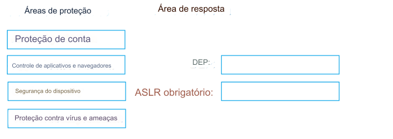

100- ARRASTE E SOLTE
Você tem 500 dispositivos Windows 10 registrados no Microsoft Intune.
Você planeja usar a proteção contra exploração no Microsoft Intune para habilitar as seguintes configurações do sistema nos
dispositivos:
• Prevenção de Execução de Dados (DEP)
• Forçar randomização para imagens (ASLR obrigatório)
Você precisa configurar um dispositivo Windows 10 que será usado para criar um arquivo de modelo.
Quais áreas de proteção do dispositivo você deve configurar no aplicativo Segurança do Windows antes de criar o arquivo de
modelo?
Para responder, arraste as áreas de proteção apropriadas para as configurações corretas.
Cada área de proteção pode ser
usada uma vez, mais de uma vez ou nunca ser usada.
Talvez seja necessário arrastar a barra de divisão entre os painéis ou rolar
para visualizar o conteúdo.
NOTA: Cada seleção correta vale um ponto.
